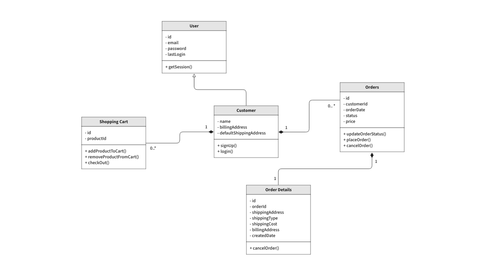
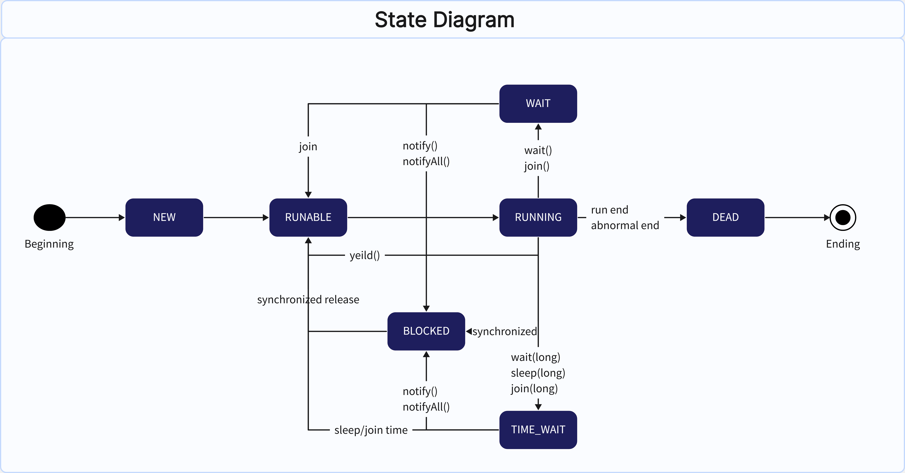

Unified Modeling Language (UML)
Standardne süsteemide visualiseerimise keel
UML (Unified Modeling Language) on tarkvaraarenduses kasutatav standardiseeritud modelleerimiskeel. See pakub graafiliste skeemide kogumit, mis aitab visualiseerida, kirjeldada ja dokumenteerida süsteemi komponente ja nende omavahelist suhtlust.
See on universaalne tööriist, mis võimaldab arendajatel, analüütikutel ja klientidel rääkida "samas keeles".

Diagrammide tüübid
Spetsiifilised UML diagrammid
Use Case (Kasutusloo diagramm)
Kirjeldab süsteemi funktsionaalsust kasutaja vaatepunktist – kes mida süsteemis teha saab.
Elemendid: Actor (kriipsujuku), Use Case (ovaal), seosed (jooned).

Class Diagram (Klassidiagramm)
Näitab süsteemi staatilist struktuuri: klasse, nende omadusi (atribuudid), meetodeid ja klassidevahelisi seoseid.
Elemendid: Klassikastid (3 osa), Association, Inheritance nooled.

Sequence Diagram (Järjestusdiagramm)
Interaktsioonidiagramm, mis näitab, kuidas objektid üksteisega ajasõltuvuses suhtlevad.
Elemendid: Eluliinid (katkendjoon), sõnumid (nooled), aktiveerimiskastid.

State Diagram (Olekuülemineku diagramm)
Kirjeldab ühe objekti elutsüklit ja selle olekute muutumist sündmuste mõjul.
Elemendid: Olekud (ümarad ristkülikud), üleminekud (nooled).

Communication Diagram (Kommunikatsioonidiagramm)
Sarnaselt järjestusdiagrammile näitab objektidevahelist suhtlust, kuid keskendub rohkem süsteemi struktuurile ja sõnumite liikumise teedele.
Elemendid: Objektid, ühendused ja nummerdatud sõnumid.